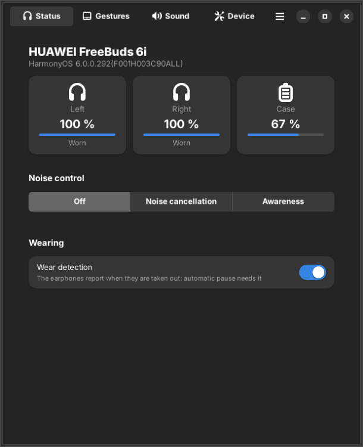
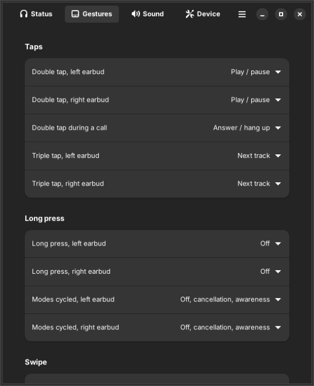
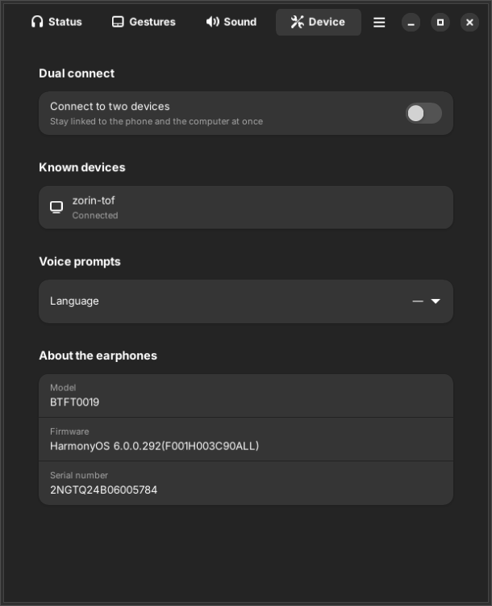
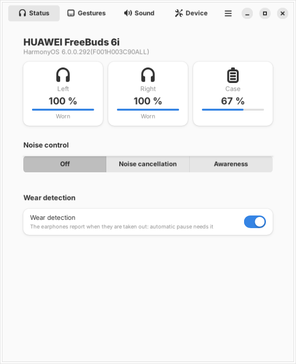

Gestures, one earbud at a time
- Double and triple tap: play / pause, next, previous, voice assistant, nothing
- Long press: switch noise control, and which modes it cycles through
- Swipe on the stem for the volume, double tap to answer a call
Sirène sets HUAWEI FreeBuds earphones from GNOME, the way the phone app does — noise control, gestures, equalizer, batteries — in a native GTK4 and libadwaita window that follows your desktop theme. No Flatpak: a plain Debian package.

Supported: FreeBuds 6i, FreeBuds 7i and FreeBuds 4i (and HONOR Earbuds 2). Sirène talks to them over their own Bluetooth channel and shows only what your model has.


The earphones tell Sirène when they leave your ear: the players that were playing pause, and resume when you put the earbud back — only those Sirène paused, never one you had stopped yourself (MPRIS: VLC, browsers, Ithaca, Nausicaa, Spotify…).
No colours of its own: Sirène follows Adwaita, your accent colour and your GTK4 theme.

Started with your session, Sirène waits without polling anything. When your FreeBuds connect, an icon appears in the top bar with both batteries and the case, and the noise control one click away; it goes away with them (AppIndicator extension, present on Zorin OS and Ubuntu).
A notification when an earbud drops below 20 %, then below 10 %.
A notification when any Bluetooth device connects or disconnects — earphones, mouse, phone — with its icon.
GNOME's volume pop-up at every change while the earphones are connected, swipe included, with the Custom OSD extension.
Each one turns on or off in Preferences, right away, without restarting.
Sirène is available for Ubuntu 24.04 “Noble” and 26.04 “Resolute” and their derivatives — Zorin OS 18, Linux Mint 22 — from a PPA, under X11 or Wayland. Updates then arrive with the rest of your system.
$ sudo add-apt-repository ppa:nourpon/sirene $ sudo apt update && sudo apt install sirene
sudo apt install ./sirene_*_all.debRequirements: Python 3.10+, PyGObject, GTK ≥ 4.14, libadwaita ≥ 1.5, BlueZ — all installed by the package. Close OpenFreebuds or MyBuds first: only one program at a time can talk to the earphones.